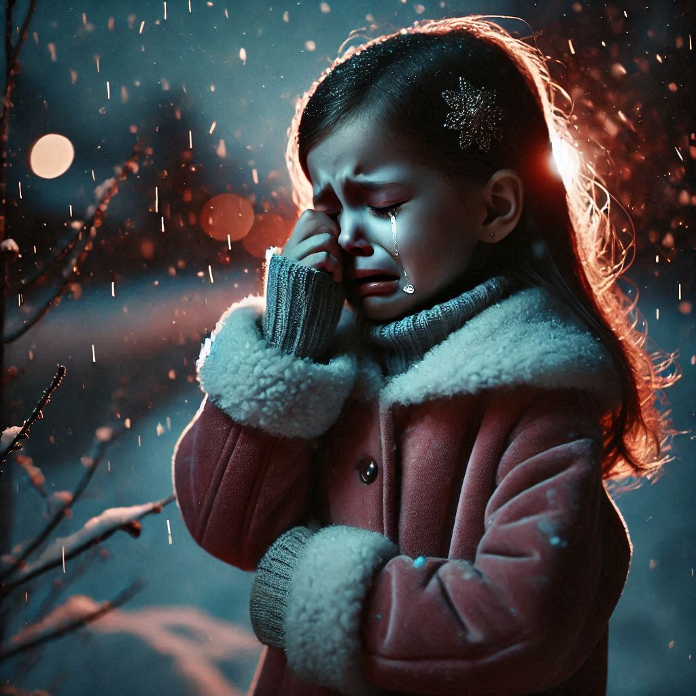

Выгнал дочь на мороз, а когда вспомнил о ней, было поздно…
Зима в этом году пришла особенно ранняя и беспощадная. Снег, сыпавшийся с серых небес, не утешал, а давил, наполняя мир холодом и одиночеством. В деревне, где Игорь когда-то жил с женой и дочерью, в этом году не было праздников. Тот же холодный ветер, что брал за душу, забрал и свет из жизни Игоря, затмив его сердце нестерпимым горем.
Когда-то его дом был полон смеха и радости, когда Ольга и маленькая Аня заполняли пространство. Но теперь в их доме царила тишина. Тишина, которая орала громче любых слов. В ту самую ночь, когда Ольга уехала в магазин и не вернулась, Игорь потерял не только её, но и самого себя.
Автокатастрофа забрала её жизнь. Резкое столкновение с фурой на мокрой дороге, который оборвал всё. Ольга, его лучшая половина, исчезла, и всё, что осталось, — это её запах в пустой спальне и её фотографии на старых, пожелтевших снимках.
Игорь не мог пережить её смерть. Он не мог простить себя, что не мог остановить её в ту роковую ночь. Он думал, что если бы был рядом, если бы она не поехала одна… В его сознании всё перемешивалось в бесконечную петлю боли. В поисках утешения он стал пить. Сначала просто по вечерам, потом каждый день. Пил, чтобы забыться, чтобы не думать, чтобы перестать ощущать, как его душа разрушается, а его жизнь превращается в бесконечный кошмар.
Аня… Она была рядом, но для Игоря она перестала существовать. Нет, он её не ненавидел — он просто не мог её видеть. Она была напоминанием о том, что он потерял. Он уже не был способен на любовь, на заботу. Он был в ловушке собственного отчаяния и алкоголя. Когда она обращалась к нему, он не замечал её. Она становилась всё более незаметной в этом доме, который превратился в место, полное разрухи и алкоголя.
Вечером, как и каждый день, Игорь сидел за компьютером. Он был поглощён игрой, где в виртуальном мире он мог быть кем угодно, только не тем, кто он есть на самом деле. Его глаза были затуманены. Словно всё, что он когда-то любил, перестало существовать. И в этот момент, когда его доченька снова тихо подошла к нему, протянув маленькую ручку, чтобы дотронуться до его куртки, он даже не заметил её.
— Папа, можно я с тобой поиграю? — спросила Аня с таким нежным, но испуганным голосом, как будто ей нужно было получить разрешение даже на дыхание.
Игорь раздражённо отмахнулся.
— Иди на улицу. Поиграй там. Я занят.
Он даже не поднял головы, не заметив, как её глаза наполнились слезами. Она стояла рядом, пытаясь понять, что происходит. Почему папа, который всегда играл с ней, теперь просто игнорирует её? Почему она для него стала невидимой?
— Но… мне страшно. — её голос срывался, в нём была такая несказанная просьба. — Папа, пожалуйста, возьми меня с собой…
Но Игорь не слушал. Его душа была слишком занята собственной болью, чтобы обратить внимание на маленькую, дрожащую девочку, которая так отчаянно нуждалась в его внимании. Он снова отмахнулся и, не дождавшись ответа, вернулся к экрану.
— Ты мешаешь! Поиграй на улице!
Аня вздрогнула от его грубости, но всё-таки направилась к двери. Всё было так, как всегда, но сейчас у неё не было сил бороться. Она одела свою старую куртку, которая не согревала, но хотя бы защищала от морозного ветра. Её руки дрожали, когда она пыталась застегнуть пуговицы, но ничего не получалось. В доме было слишком холодно, и даже маленькая попытка согреться не принесла облегчения. Она выглянула в окно, где уже сгущалась темнота, и в глаза ей бросился не свет, а мрак, который, казалось, обвивал её душу.
Аня не видела, как Игорь снова погрузился в игру. Она была маленькой девочкой, и её сердце билось в груди с невыносимым страхом. Но в этот момент она подумала, что если она выйдет, может, ей станет легче. Может, на улице, в этом холодном и мрачном мире, она почувствует хоть какую-то свободу. Может, она найдёт там свою мать.
Она вышла на улицу. Мороз обжигал кожу, а ветер хлестал по лицу, как жгучие руки, вытягивающие её из реальности. Вокруг был пустой, заснеженный мир, как белая, не стертая ещё с холста зима, которая, как и её отец, не имела жалости. Аня медленно шла, не зная, куда. Страшно было не только от холода, но и от пустоты, которая окружала её. Она не понимала, что делать. Игорь остался дома, а она… она пошла, потому что не знала другого пути.
Прохладный воздух ударил в грудь. Она стала идти дальше, её маленькие шаги вваливаются в глубокий снег, который ещё не утоптан. Её сердце сжималось от боли, но она шла. Она думала, что сможет найти свою маму или хотя бы кого-то, кто ей поможет. Строгий свет фар не мог затмить темных, опасных теней, которые плотно обвивали её маленькое тело, заставляя замерзать на каждом шагу.
Через какое-то время она поняла, что идти дальше невозможно. В её ушах звучали тишина и тревога, которые сливались в единую точку боли, на которую не было ответа. Ноги с трудом двигались, но она не могла остановиться. Это было уже не просто желание быть в безопасности, а какой-то последний порыв духа. Вдруг в темноте ей показалось, что она что-то видит — свет. Но когда она приблизилась, поняла, что это не дом, а просто туман, который насмешливо скрывает её цель.
Аня упала на землю, закричав от отчаяния, но крик был поглощён метелью. Снег забрал её последние силы. Она уже не могла встать, тело её отказывалось двигаться. Тьма окружала её, а холод сковывал сознание. Она думала о том, как сильно ей хотелось вернуться, но… уже было поздно. Сердце её билось с каждым разом всё слабее, и темнота поглотила её.
Когда Игорь наконец выбежал на улицу, его глаза не увидели дочери в темноте. Он знал, что она не может быть далеко. Но он искал её слишком поздно. В его разуме не было сожаления — только пустота. Он чувствовал, как под ногтями ломается его собственная жизнь, когда осознал, что больше никогда не услышит её смех, не увидит её глаз. Смертельный холод в тот момент был для него лишь началом его собственного конца.
Игорь так и не нашёл свою дочь. Снег, который она оставила позади, оказался для неё тем самой могилой.
Комментарии